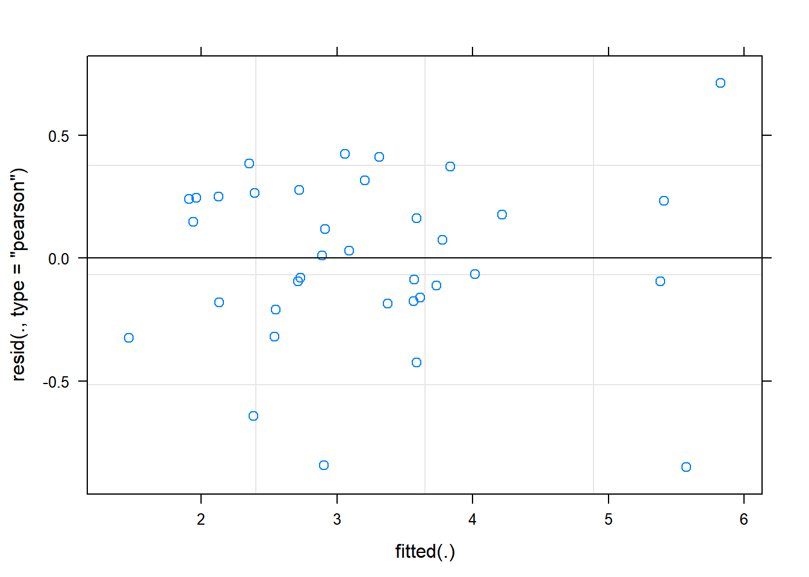

Chapter 5 Adjusting for Covariates
5.1 About the data
The data used in this example is from a study was conducted in Eastern Zambia and the main aim was to improve on the efficiency of the natural fallows by using appropriate trees that may have relevance in soil fertility regeneration within permissible fallow periods. This is the same data used in the first part of this series.
The design was a randomized complete block design experiment with 4 blocks and 9 treatments was conducted. The primary outcome variable was crop yield (yield). We also have data collected on striga infestation.
The objective for this analysis is to investigate the relationship between striga infestation and yield across the different treatments.
The following steps were followed to generate the output in this document. The data was organized in excel rectangle columns with the different variables appearing in excel columns. All data checks were done in excel, meaningful data was selected and a copy of this data file was stored as a CSV file to make data import easy in R. The data file used in this analysis can be downloaded here: https://bit.ly/2rfLBEt
5.2 Section 1: Steps in analysis using R
- Install R packages needed
library(ggplot2)
library(emmeans)
library(doBy)
library(lmerTest)
library(multcompView)- Import data
fallow <- read.csv("C:/Users/Admin/Desktop/Fallow N2.csv")- Check and update data
summary(fallow)
str(fallow)
fallow$rep<-factor(fallow$rep)
fallow$plot<-factor(fallow$plot)- Explore data
ggplot(data=fallow,aes(y=yield,x=treat,col=rep))+geom_point()
summaryBy(yield~treat, data=fallow, FUN=c(min,max,mean,median,sd))- Specify a model for data
rcbdmodel1<-lmer(yield~treat+(1|rep),data=fallow)- Check the model
plot(rcbdmodel1)
qqnorm(resid(rcbdmodel1))
qqline(resid(rcbdmodel1))- Interpret the model
anova(rcbdmodel1,ddf="Kenward-Roger")
print(VarCorr(rcbdmodel1), comp=("Variance"))- Present the results from the model
emmip(rcbdmodel1,~treat,CIs = TRUE)
emmeans(rcbdmodel1, ~treat)
cld(emmeans(rcbdmodel1, ~treat))5.3 Section 2: Explanation of Steps
5.3.1 1. Install R packages needed
A number of packages following packages were used during data exploration and analysis. For a general introduction explaining what R packages are and how they work, this is a really useful guide https://www.datacamp.com/community/tutorials/r-packages-guide. For each of these packages to be installed, using install.packages(), this requires a reliable internet connection and a correctly installed version of R and RStudio. If you are having difficulties installing these packages please ask for help.
install.packages("ggplot2")
library(ggplot2)ggplot2 This package provides a powerful graphics language for creating elegant and complex graphs in R.
install.packages("emmeans")
library(emmeans)emmeans Estimated marginal means (also known as least squares means) helps provide expected mean values and confidence intervals from statistical models.
install.packages("doBy")
library(doBy)doByAllows easy production of summary statistic tables
install.packages("lmerTest")
library(lmerTest)lmerTest Allows produce of flexible mixed effects regression models, similar to REML in Genstat.
install.packages("multcompView")
library(multcompView)multcompView allows for mean seperation methods on analyses
5.3.2 2. Import data
Our data set saved as a CSV file, so we can use the read.csv commmand to import the data. We are going to assign the name of the data with R to be fallow2. Remember in R Studio you could also use the “Import Dataset” menu to import a dataset.
fallow <- read.csv("C:/Users/Admin/Desktop/Fallow N2.csv")5.3.3 3. Check and update data
When reading data into R it is always useful to check that data is in the format expected. How many variables are there? How many rows? How have the columns been read in? The summary command can help to show if the data is being treated correctly.
summary(fallow)## rep plot treat yield
## Min. :1.00 Min. :1 1 S.sesban : 4 Min. :1.140
## 1st Qu.:1.75 1st Qu.:3 2 G.sepium : 4 1st Qu.:2.370
## Median :2.50 Median :5 3 L.leuco : 4 Median :3.140
## Mean :2.50 Mean :5 4 F.congesta: 4 Mean :3.232
## 3rd Qu.:3.25 3rd Qu.:7 5 C.siamea : 4 3rd Qu.:3.728
## Max. :4.00 Max. :9 6 C.calo : 4 Max. :6.540
## (Other) :12
## striga
## Min. : 0.0
## 1st Qu.: 0.0
## Median : 21.0
## Mean : 334.1
## 3rd Qu.: 238.5
## Max. :2798.0
## Where data is being treated as a numeric variable (i.e. a number) summary provides statistics like the mean, min and max. Where data is being treated like a categorical variable (i.e. a group) then summary provides frequency tables.
From the results we can see that the variables rep and plot are being considered as numeric variables. However these are grouping variables, not number variables, the numbers used are simply codes. If we do not rectify this then our analysis later will be incorrect and meaningless.
This can also be seen more explicitly using the str() function.
str(fallow)## 'data.frame': 36 obs. of 5 variables:
## $ rep : int 1 4 4 1 1 3 3 1 3 2 ...
## $ plot : int 2 3 6 9 7 3 8 6 9 9 ...
## $ treat : Factor w/ 9 levels "1 S.sesban","2 G.sepium",..: 8 5 8 7 5 8 5 9 6 5 ...
## $ yield : num 1.14 1.74 1.95 2.06 2.09 2.15 2.21 2.22 2.34 2.38 ...
## $ striga: int 2798 0 1787 129 1 1144 0 228 0 0 ...So we need to convert these variables into factors.
fallow$rep<-factor(fallow$rep)
fallow$plot<-factor(fallow$plot)These commands take the column rep within the data frame fallow, converts into a factor and saves the result in a column called rep within fallow.
5.3.4 4. Explore data
5.3.4.1 Plots
We are now interesting in assessing the relationship between yield and striga - so we want to produce a plot of striga against yield, with different coloured points denoting each treatment.
ggplot(data=fallow,aes(y=yield,x=striga,col=treat))+geom_point()We can see from the distribution of striga that there are some farms with very high levels of striga, and some farms with no striga. The big range of values makes it hard to make interpretations from this plot, so taking a square root transformation may help to visualise the relationship. A log transformation will not help here because of the large number of 0 values of striga.
ggplot(data=fallow,aes(y=yield,x=sqrt(striga),col=treat))+geom_point()ggplot(data=fallow,aes(y=yield,x=sqrt(striga)))+geom_point(aes(col=treat))+geom_smooth(method="lm")####Summary Statistics
To produce summary statistics, by group, there are many options within R. One option is to use the summaryBy function, from the doBy library. The code used for this is quite similar to the code we will use to produce models in a later step.
summaryBy(yield~treat, data=fallow, FUN=mean)## treat yield.mean
## 1 1 S.sesban 5.5475
## 2 2 G.sepium 3.8450
## 3 3 L.leuco 3.6750
## 4 4 F.congesta 3.4600
## 5 5 C.siamea 2.1050
## 6 6 C.calo 2.5875
## 7 7 groundnut 3.0825
## 8 8 maize 1.9750
## 9 9 nat fallow 2.8100We can also calculate multiple statistics in the same line of code
summaryBy(yield+striga~treat, data=fallow, FUN=c(mean,median,sd))## treat yield.mean striga.mean yield.median striga.median yield.sd
## 1 1 S.sesban 5.5475 0.25 5.465 0.0 0.7625997
## 2 2 G.sepium 3.8450 712.00 3.900 738.0 0.4956813
## 3 3 L.leuco 3.6750 10.25 3.550 0.0 0.3690077
## 4 4 F.congesta 3.4600 448.00 3.465 25.0 0.2412468
## 5 5 C.siamea 2.1050 0.25 2.150 0.0 0.2708628
## 6 6 C.calo 2.5875 44.00 2.635 35.5 0.1726992
## 7 7 groundnut 3.0825 130.00 3.275 124.5 0.7407372
## 8 8 maize 1.9750 1532.25 2.050 1465.5 0.6318491
## 9 9 nat fallow 2.8100 130.00 2.950 146.0 0.4034848
## striga.sd
## 1 0.50000
## 2 560.27731
## 3 20.50000
## 4 862.29693
## 5 0.50000
## 6 52.66878
## 7 110.06362
## 8 1016.48885
## 9 105.694535.3.5 5. Specify a model for data
In this design, an RCBD, we have one treatment factor, “treat”, and one layout factor “rep”. More information about model fitting can be found in section 2.
rcbdmodel2<-lmer(yield~treat+sqrt(striga)+(1|rep),data=fallow)R is unlike many other software packages in how it fits models. The best way of handling models in R is to assign the model to a name (in this case rcbdmodel1) and then ask R to provide different sorts of output for this model. When you run the above line you will get now output from the data - this is what we expected to see!
5.3.6 6. Check the model
Before interpretting the model any further we should investigate the model validity, to ensure any conclusions we draw are valid. There are 3 assumptions that we can check for using standard model checking plots. 1. Homogeneity (equal variance) 2. Values with high leverage 3. Normality of residuals
The function plot() when used with a model will plot the fitted values from the model against the expected values.
plot(rcbdmodel2) The residual Vs fitted plot is a scatter plot of the Residuals on the y-axis and the fitted on the x-axis and the aim for this plot is to test the assumption of equal variance of the residuals across the range of fitted values. Since the residuals do not funnel out (to form triangular/diamond shape) the assumption of equal variance is met.
We can also see that there are no extreme values in the residuals which might be potentially causing problems with the validity of our conclusions (leverage)
To assess the assumption of normality we can produce a qqplot. This shows us how closely the residuals follow a normal distribution - if there are severe and syste,matic deviations from the line then we may want to consider an alternative distribution.
qqnorm(resid(rcbdmodel2))
qqline(resid(rcbdmodel2))In this case the residuals seem to fit the assumption required for normality.
5.3.7 7. Interpret Model
The anova() function only prints the rows of analysis of variance table for treatment effects when looking at a mixed model fitted using lmer().
anova(rcbdmodel2,ddf="Kenward-Roger")## Type III Analysis of Variance Table with Kenward-Roger's method
## Sum Sq Mean Sq NumDF DenDF F value Pr(>F)
## treat 33.253 4.1567 8 23.176 23.6703 2.132e-09 ***
## sqrt(striga) 1.257 1.2568 1 24.977 7.1571 0.01298 *
## ---
## Signif. codes: 0 '***' 0.001 '**' 0.01 '*' 0.05 '.' 0.1 ' ' 1ddf=Kenward-Roger tells R which method to use for determining the calculations of the table; this option matches the defaults found within SAS or Genstat. The ANOVA table suggests a highly significant effect of the treatment on the yield.
To obtain the residual variance, and the variance attributed to the blocks we need an additional command. From these number it is possible to reconstruct a more classic ANOVA table, if so desired.
print(VarCorr(rcbdmodel2), comp=("Variance"))## Groups Name Variance
## rep (Intercept) 0.054136
## Residual 0.1756005.3.8 8. Present the results from the model
To help understand what the significant result from the ANOVA table means we can produce several plots and tables to help us. First we can use the function emmip() to produce plots of the modelled results, including 95% confidence intervals.
emmip(rcbdmodel2,striga~treat,var="striga",CIs = TRUE, at = list(striga = c(0, 10,100,1000)))Or alternatively
emmip(rcbdmodel2,treat~striga,var="striga",at = list(striga = seq(0,1000,by=100)))To obtain the numbers used in creating this graph we can use the function emmeans.
emmeans(rcbdmodel2,~treat*striga,var="striga",at = list(striga = c(0, 10,100,1000)))## treat striga emmean SE df lower.CL upper.CL
## 1 S.sesban 0 5.553321 0.2396638 18.13 5.0500620 6.056579
## 2 G.sepium 0 4.382568 0.3127465 23.61 3.7365259 5.028609
## 3 L.leuco 0 3.712270 0.2400585 18.17 3.2082694 4.216271
## 4 F.congesta 0 3.755253 0.2638447 20.52 3.2057709 4.304734
## 5 C.siamea 0 2.110821 0.2396638 18.13 1.6075620 2.614079
## 6 C.calo 0 2.696189 0.2430732 18.50 2.1865045 3.205873
## 7 groundnut 0 3.313834 0.2547769 19.69 2.7818499 3.845819
## 8 maize 0 2.842226 0.4031321 25.65 2.0130321 3.671421
## 9 nat fallow 0 3.035732 0.2540738 19.63 2.5050969 3.566367
## 1 S.sesban 10 5.479695 0.2409904 18.28 4.9739401 5.985450
## 2 G.sepium 10 4.308942 0.2958172 22.77 3.6966556 4.921228
## 3 L.leuco 10 3.638644 0.2400389 18.17 3.1346806 4.142608
## 4 F.congesta 10 3.681627 0.2535683 19.58 3.1519610 4.211293
## 5 C.siamea 10 2.037195 0.2409904 18.28 1.5314401 2.542950
## 6 C.calo 10 2.622563 0.2400121 18.17 2.1186500 3.126477
## 7 groundnut 10 3.240209 0.2467978 18.90 2.7234660 3.756951
## 8 maize 10 2.768601 0.3813535 25.41 1.9838290 3.553372
## 9 nat fallow 10 2.962106 0.2463060 18.85 2.4462979 3.477915
## 1 S.sesban 100 5.320496 0.2542321 19.64 4.7895569 5.851435
## 2 G.sepium 100 4.149743 0.2653481 20.65 3.5973441 4.702141
## 3 L.leuco 100 3.479445 0.2505537 19.28 2.9555477 4.003343
## 4 F.congesta 100 3.522428 0.2407873 18.25 3.0170555 4.027800
## 5 C.siamea 100 1.877996 0.2542321 19.64 1.3470569 2.408935
## 6 C.calo 100 2.463364 0.2441046 18.61 1.9517290 2.974999
## 7 groundnut 100 3.081010 0.2396546 18.13 2.5777683 3.584251
## 8 maize 100 2.609402 0.3371451 24.49 1.9143072 3.304496
## 9 nat fallow 100 2.802907 0.2396686 18.13 2.2996397 3.306175
## 1 S.sesban 1000 4.817064 0.3632908 25.12 4.0690284 5.565100
## 2 G.sepium 1000 3.646311 0.2508980 19.32 3.1217555 4.170866
## 3 L.leuco 1000 2.976014 0.3545407 24.94 2.2457305 3.706297
## 4 F.congesta 1000 3.018996 0.2908737 22.48 2.4165111 3.621481
## 5 C.siamea 1000 1.374564 0.3632908 25.12 0.6265284 2.122600
## 6 C.calo 1000 1.959932 0.3353532 24.44 1.2684536 2.651411
## 7 groundnut 1000 2.577578 0.3050497 23.25 1.9469164 3.208239
## 8 maize 1000 2.105970 0.2446031 18.67 1.5933909 2.618549
## 9 nat fallow 1000 2.299476 0.3063498 23.32 1.6662200 2.932731
##
## Degrees-of-freedom method: kenward-roger
## Confidence level used: 0.95And one method for conducting mean separation analysis, holding striga effect constant, we can use the function cld().
cld(emmeans(rcbdmodel2, ~treat))## treat emmean SE df lower.CL upper.CL .group
## 5 C.siamea 1.685247 0.2864468 22.21 1.091515 2.278979 1
## 6 C.calo 2.270615 0.2673279 20.81 1.714369 2.826862 12
## 8 maize 2.416653 0.2910113 22.49 1.813896 3.019410 123
## 9 nat fallow 2.610159 0.2510259 19.33 2.085359 3.134958 123
## 7 groundnut 2.888261 0.2504107 19.27 2.364636 3.411885 234
## 3 L.leuco 3.286697 0.2801804 21.79 2.705311 3.868082 34
## 4 F.congesta 3.329679 0.2445546 18.66 2.817192 3.842166 34
## 2 G.sepium 3.956994 0.2432827 18.53 3.446913 4.467074 45
## 1 S.sesban 5.127747 0.2864468 22.21 4.534015 5.721479 5
##
## Degrees-of-freedom method: kenward-roger
## Confidence level used: 0.95
## P value adjustment: tukey method for comparing a family of 9 estimates
## significance level used: alpha = 0.05In the output, groups sharing a letter in the .group are not statistically different from each other.
5.4 Section 3 – Methodological Principles
When adjusting for covariates it is important to consider if the covariate being included is something that could be affected by the treatment variables, or whether it is something which affects the outcome independent of the treatments. If we were confident that striga infestation was not impacted by the choice of treatment then in this analysis